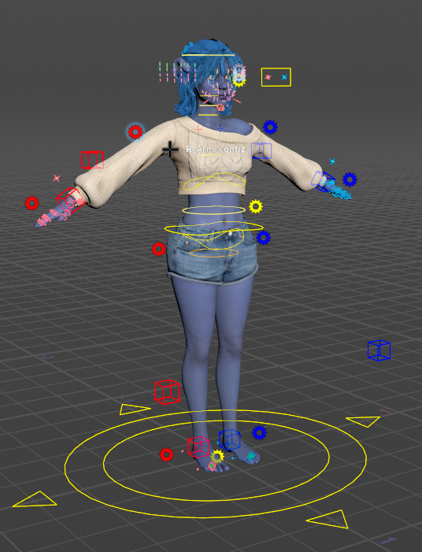
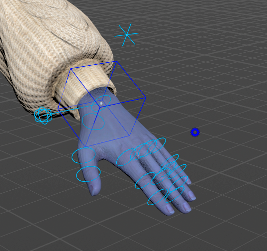
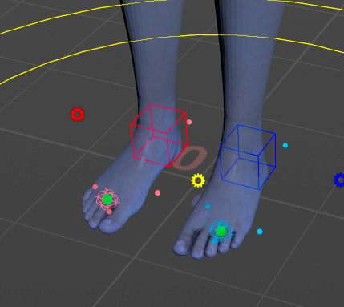
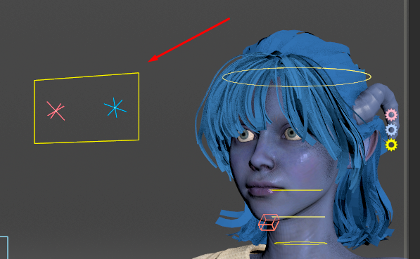

The Controls
This page names every control the rig draws, what it moves, and which gear setting shows the ones that are hidden by default.
Hover any control to see its name. That name is the one the HUD, the Character Picker and the Animation Editor use.

Colours
- Blue is the character's left side (names starting
L_), red the right side (R_), yellow the centre. With the character facing you, the blue side is on your right. - Secondary controls use a lighter shade of their side's colour. The detail-level crosses and boxes along the limbs are paler still.
- A few controls have colours of their own: the light-green crosses that shape the spine and neck, the orange Pelvis ring, the orange-red jaw box, and the green spheres at the base of the toes.
- The face sliders take the colour of their face region. The gears follow the side colours, except the two face gears: Face is pink and Face Blendshapes is pale blue.
Detail levels
Every body control belongs to detail level 1, 2 or 3: the main controls, the secondary ones, and fine detail. The LOD 1, LOD 2 and LOD 3 buttons on each gear show and hide one level at a time. See Gears.
The tables below give each control's level.
Root
Spine and hips
The spine is a spline: you move its two ends and it bends between them, the way SideFX's Spine component works.
The spine gear's stretch setting lets the spine lengthen to follow the chest control (see Gears).
Neck, head and jaw
The neck is a spline like the spine; see SideFX's Neck Head component.
To open the mouth by curve, see the Jaw Open note on Face Tools.
Arms
The arms start in IK: you move the hand and the arm follows. The arm's gear switches it to FK, where you rotate it joint by joint. Only one of the two sets is drawn at a time (see Gears).
In IK, the default:
In FK:
At detail level 3, pale crosses and boxes appear along the arms and legs. They belong to the limb's twist setup, and you rarely need them. To rotate the twist bones themselves, turn on twistControls on the arm's gear.

Hands
The Character Picker's Hands tab selects the same controls (see Animating), and the hand poses in the Animation Catalog are keyed on these finger rings.
Legs and feet
The legs work like the arms: IK by default, FK through the leg's gear. The feet are reverse feet: the foot turns about pivots at the heel, the ball, the toe tip and each side.
The last four rows give the L_ names, and there is an R_ set as well.
The foot's gear has roll and tilt sliders that drive the pivots for you, and toeControls for a control on each toe (see Gears).

Eyes and Look At
See Auto Animation for how the two targets work together, and Gears for the settings.

The face
- Sliders on the face (coloured balls on short lines) and a panel of extra sliders beside the head, left of it by default. The Face gear picks which sliders show and where the panel sits.
- The face board, when the Face gear's boxlayout is on.
- The face sprite at the bottom left of the viewport, which opens the list of slider sets.
- The Face Puppet pad and its two sprites, above the face sprite.
- Three gears beside the head, top to bottom: Face (pink), Face Blendshapes (pale blue) and Eyes (yellow). See Gears.
All of these are explained on Face Tools.

Hidden until you ask
These controls are hidden by default to keep the viewport clear. A gear setting shows each group.